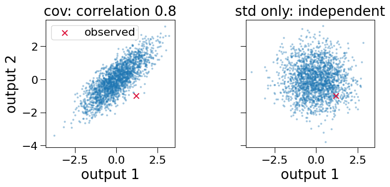
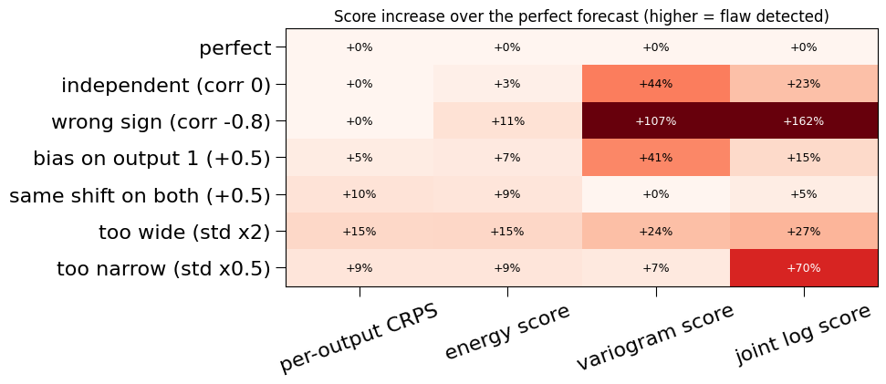
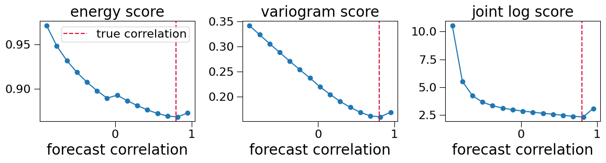

Scoring Joint Predictions: Energy and Variogram Scores¶
What this tutorial covers:
A surrogate with several outputs predicts more than a mean and a std per output. It implies a joint distribution: how likely each combination of outputs is. When outputs move together (lift and drag, the objectives of a Pareto front, the values of a field at neighbouring points), a model that gets every output’s own uncertainty right but treats the outputs as independent still misjudges which combinations can happen. Per-output metrics (RMSE, coverage, CRPS) cannot see that.
multioutreg.metrics has three tools for it:
Function |
What it does |
|---|---|
|
Draws samples from per-row Gaussian predictions, from a full covariance or a per-output std |
|
The multivariate CRPS: one number for the whole joint distribution |
|
Compares the predicted and observed differences between outputs, so it reacts to a wrong correlation |
Both scores are proper (an honest forecast of the true distribution scores best in expectation) and lower is better. This tutorial:
draws joint samples with
gaussian_samples;scores forecasts with one known flaw each against a known truth, to show what each score can and cannot see, next to per-output CRPS and the joint Gaussian log score;
covers the practical choices: number of samples, output scaling, the variogram’s order
pand pair weights;compares real surrogates: an independent GP against
GaussianCopulaSurrogate,PCAOutputSurrogateandMultiTaskGPSurrogate, on correlated noise and on DTLZ2;ends with a guide to which score to report.
Needs: the core install; section 4 also uses gpytorch for the multi-task GP (it is skipped without it). Runs in: under a minute.
[1]:
import warnings
warnings.filterwarnings("ignore")
import matplotlib.pyplot as plt
import numpy as np
import pandas as pd
from scipy.stats import multivariate_normal, norm
from multioutreg.metrics import energy_score, gaussian_samples, variogram_score
pd.set_option("display.precision", 4)
rng = np.random.default_rng(0)
Two reference scores sit next to the joint ones throughout:
Per-output CRPS (continuous ranked probability score), the usual proper score for one output’s Gaussian prediction, averaged over outputs. Closed form for a Gaussian.
Joint Gaussian log score: the negative log density of the observed vector under the predicted multivariate Gaussian. It sees everything, including dependence, but only applies when the prediction is Gaussian, and one badly placed point can dominate it. The energy and variogram scores work from samples of any distribution.
[2]:
def crps_gaussian(mean, std, y):
# Mean per-output CRPS of Gaussian predictions (Gneiting & Raftery 2007, closed form).
z = (y - mean) / std
return float(np.mean(std * (z * (2 * norm.cdf(z) - 1) + 2 * norm.pdf(z) - 1 / np.sqrt(np.pi))))
def joint_log_score(mean, cov, y):
# Mean negative log density of each observed vector under its predicted Gaussian.
return float(-np.mean([multivariate_normal(mean[i], cov[i], allow_singular=True).logpdf(y[i])
for i in range(len(y))]))
def stds(cov):
return np.sqrt(np.diagonal(cov, axis1=1, axis2=2))
1. Drawing joint samples with gaussian_samples¶
Both joint scores take samples of shape (n_rows, n_samples, n_outputs). gaussian_samples makes them from what a surrogate returns:
predict(X, return_cov=True)gives a mean(n, m)and a covariance(n, m, m)per row: correlated samples;predict(X, return_std=True)gives a mean and a std(n, m): independent samples.
Below, one prediction with mean (0, 0), unit stds and correlation 0.8, sampled both ways.
[3]:
mean = np.zeros((1, 2))
cov = np.array([[[1.0, 0.8], [0.8, 1.0]]]) # one row, two outputs
std = np.ones((1, 2))
S_corr = gaussian_samples(mean, cov, n_samples=2000, seed=0)
S_ind = gaussian_samples(mean, std, n_samples=2000, seed=0)
print("shape:", S_corr.shape)
print("sample covariance (correlated):\n", np.cov(S_corr[0].T).round(2))
print("sample covariance (independent):\n", np.cov(S_ind[0].T).round(2))
y_obs = np.array([1.2, -1.0]) # an outcome where the outputs disagree
fig, axes = plt.subplots(1, 2, figsize=(9, 4), sharex=True, sharey=True)
for ax, S, title in [(axes[0], S_corr, "cov: correlation 0.8"), (axes[1], S_ind, "std only: independent")]:
ax.scatter(*S[0].T, s=4, alpha=0.3)
ax.scatter(*y_obs, color="crimson", s=60, marker="x", label="observed")
ax.set_title(title); ax.set_xlabel("output 1"); ax.set_aspect("equal")
axes[0].set_ylabel("output 2"); axes[0].legend(loc="upper left")
plt.tight_layout(); plt.show()
shape: (1, 2000, 2)
sample covariance (correlated):
[[1.01 0.79]
[0.79 0.97]]
sample covariance (independent):
[[ 1. -0.03]
[-0.03 0.99]]

The two clouds have identical marginals: each output alone is N(0, 1) in both. Only the joint shape differs. The observed point, with one output high and the other low, sits in the empty corner of the correlated cloud. A per-output score rates the two forecasts of this point equally; a joint score does not.
gaussian_samples takes the covariance’s square root by eigen-decomposition rather than Cholesky, so a singular covariance (perfectly correlated outputs, or a PCAOutputSurrogate that keeps fewer components than outputs) still works:
[4]:
singular = np.array([[[1.0, 1.0], [1.0, 1.0]]]) # outputs identical
S = gaussian_samples(np.zeros((1, 2)), singular, n_samples=5, seed=0)
print(S[0].round(3)) # both columns equal
[[-0.132 -0.132]
[ 0.105 0.105]
[ 0.362 0.362]
[ 0.947 0.947]
[-1.265 -1.265]]
2. What each score can and cannot see¶
To know which answer is right, generate the truth ourselves: 200 rows, two outputs whose noise has correlation 0.8, and the true mean known for every row. Then score seven forecasts. The first is the truth itself; each other one has exactly one flaw.
[5]:
n, rho = 200, 0.8
mu = rng.normal(size=(n, 2)) # true means
Y = mu + rng.multivariate_normal([0, 0], [[1, rho], [rho, 1]], size=n)
def covs(r, scale=1.0):
return np.broadcast_to(scale**2 * np.array([[1.0, r], [r, 1.0]]), (n, 2, 2)).copy()
forecasts = {
"perfect": (mu, covs(rho)),
"independent (corr 0)": (mu, covs(0.0)),
"wrong sign (corr -0.8)": (mu, covs(-rho)),
"bias on output 1 (+0.5)": (mu + [0.5, 0.0], covs(rho)),
"same shift on both (+0.5)": (mu + 0.5, covs(rho)),
"too wide (std x2)": (mu, covs(rho, 2.0)),
"too narrow (std x0.5)": (mu, covs(rho, 0.5)),
}
rows = {}
for name, (m, c) in forecasts.items():
S = gaussian_samples(m, c, n_samples=200, seed=1)
rows[name] = {
"per-output CRPS": crps_gaussian(m, stds(c), Y),
"energy score": energy_score(Y, S),
"variogram score": variogram_score(Y, S, p=0.5),
"joint log score": joint_log_score(m, c, Y),
}
scores = pd.DataFrame(rows).T
scores
[5]:
| per-output CRPS | energy score | variogram score | joint log score | |
|---|---|---|---|---|
| perfect | 0.5766 | 0.8612 | 0.1571 | 2.3381 |
| independent (corr 0) | 0.5766 | 0.8911 | 0.2263 | 2.8816 |
| wrong sign (corr -0.8) | 0.5766 | 0.9571 | 0.3256 | 6.1146 |
| bias on output 1 (+0.5) | 0.6079 | 0.9217 | 0.2210 | 2.6839 |
| same shift on both (+0.5) | 0.6370 | 0.9406 | 0.1571 | 2.4534 |
| too wide (std x2) | 0.6632 | 0.9936 | 0.1942 | 2.9661 |
| too narrow (std x0.5) | 0.6291 | 0.9387 | 0.1685 | 3.9848 |
Raw values are on different scales, so compare each column to the perfect forecast:
[6]:
rel = 100 * (scores / scores.loc["perfect"] - 1)
fig, ax = plt.subplots(figsize=(10, 4.5))
im = ax.imshow(rel.values, cmap="Reds", vmin=0, vmax=100, aspect="auto", origin="upper")
ax.set_xticks(range(rel.shape[1]), rel.columns, rotation=20)
ax.set_yticks(range(rel.shape[0]), rel.index)
for i in range(rel.shape[0]):
for j in range(rel.shape[1]):
v = rel.values[i, j]
v = 0.0 if abs(v) < 0.5 else v
ax.text(j, i, f"{v:+.0f}%", ha="center", va="center", fontsize=9,
color="white" if v > 60 else "black")
ax.set_title("Score increase over the perfect forecast (higher = flaw detected)", fontsize=12)
plt.tight_layout(); plt.show()

How to read the table, row by row:
Independent and wrong-sign forecasts have the right marginals, so per-output CRPS is exactly unchanged: it cannot see dependence. The energy score notices, but only weakly (a few percent for “independent”). The variogram and joint log scores react strongly.
Bias on one output is seen by every score.
The same shift on every output is the variogram score’s blind spot: it looks only at differences between outputs, which a common shift leaves unchanged, so its value is identical to the perfect forecast’s. Always report it next to a score that sees the means.
Too wide / too narrow: all scores punish miscalibrated spread, the log score most harshly when intervals are too narrow.
A forecast’s assumed correlation can also be swept directly. The truth’s correlation is 0.8; a proper score should be lowest there:
[7]:
grid = np.linspace(-0.9, 0.95, 15)
sweep = {"energy score": [], "variogram score": [], "joint log score": []}
for r in grid:
S = gaussian_samples(mu, covs(r), n_samples=150, seed=2)
sweep["energy score"].append(energy_score(Y, S))
sweep["variogram score"].append(variogram_score(Y, S))
sweep["joint log score"].append(joint_log_score(mu, covs(r), Y))
fig, axes = plt.subplots(1, 3, figsize=(12, 3.4))
for ax, (name, vals) in zip(axes, sweep.items()):
ax.plot(grid, vals, marker="o")
ax.axvline(rho, color="crimson", ls="--", label="true correlation")
ax.set_title(name); ax.set_xlabel("forecast correlation")
axes[0].legend()
plt.tight_layout(); plt.show()

All three bottom out near the true correlation, which is what proper means in practice. The energy score’s curve is shallow (a wrong correlation costs it little), the variogram score’s is steep. With noisy data the energy score may not separate two models that differ only in their dependence; the variogram score usually will.
One more identity. With a single output, the energy score is the CRPS. Checked numerically against the closed form (the small gap is Monte Carlo error; see section 3):
[8]:
S1 = gaussian_samples(mu[:, :1], np.ones((n, 1)), n_samples=400, seed=0)
print(f"energy score, 1 output: {energy_score(Y[:, :1], S1):.4f}")
print(f"closed-form CRPS: {crps_gaussian(mu[:, :1], np.ones((n, 1)), Y[:, :1]):.4f}")
energy score, 1 output: 0.5769
closed-form CRPS: 0.5715
3. Practical choices¶
How many samples?¶
Both scores are estimated from samples, so they carry Monte Carlo noise. The energy score also has a small-sample bias: its second term averages distances between pairs of samples, including each sample with itself (distance 0), which makes it too high when n_samples is small. Cost grows with the square of n_samples, because the energy score compares every pair of samples: it builds an (n_rows, n_samples, n_samples, n_outputs) array, so 1,000 rows with 1,000 samples and 3 outputs
would need about 24 GB. Score in batches of rows if needed.
[9]:
import time
rows = []
for S_n in (10, 25, 50, 100, 200):
t0 = time.perf_counter()
vals = [energy_score(Y, gaussian_samples(mu, covs(rho), S_n, seed=k)) for k in range(5)]
rows.append({"n_samples": S_n, "mean over 5 seeds": np.mean(vals), "std over seeds": np.std(vals),
"seconds per score": (time.perf_counter() - t0) / 5})
pd.DataFrame(rows).set_index("n_samples")
[9]:
| mean over 5 seeds | std over seeds | seconds per score | |
|---|---|---|---|
| n_samples | |||
| 10 | 0.9420 | 0.0278 | 0.0022 |
| 25 | 0.8984 | 0.0094 | 0.0093 |
| 50 | 0.8810 | 0.0088 | 0.0227 |
| 100 | 0.8620 | 0.0078 | 0.1038 |
| 200 | 0.8624 | 0.0029 | 0.4494 |
With few samples the energy score is biased upward and varies between seeds; from a hundred or two samples on, both effects are small next to the differences in section 2. Fix the seed (seed=...) when comparing models, so they are scored on the same random draws and the comparison is not just noise.
Put the outputs on one scale¶
Both scores add up distances across outputs, so an output measured in large units drowns out the others. Below, the same forecasts are scored with output 2 multiplied by 1000, as if it were in millimetres while output 1 is in metres:
[10]:
scale = np.array([1.0, 1000.0])
rows = {}
for name in ["perfect", "independent (corr 0)", "bias on output 1 (+0.5)"]:
m, c = forecasts[name]
S_raw = gaussian_samples(m * scale, c * np.outer(scale, scale), 200, seed=1)
S_std = S_raw / scale # standardized back
rows[name] = {"energy, raw units": energy_score(Y * scale, S_raw),
"energy, standardized": energy_score(Y, S_std)}
pd.DataFrame(rows).T
[10]:
| energy, raw units | energy, standardized | |
|---|---|---|
| perfect | 582.9098 | 0.8611 |
| independent (corr 0) | 582.9106 | 0.8911 |
| bias on output 1 (+0.5) | 582.9104 | 0.9226 |
In raw units the forecast with a bias on output 1 scores almost the same as the perfect one, because output 1 is invisible next to output 2’s thousands. Divide each output by a fixed scale (e.g. its training-set std) before scoring, and use the same scale for every model you compare.
The variogram order p and pair weights¶
p sets how pairwise differences are compared. p = 0.5 (the default) is the usual choice: larger p weighs large differences more and becomes sensitive to outliers and heavy tails. Below, the perfect and independent forecasts are scored on clean data and on the same data with a few large outliers:
[11]:
Y_out = Y.copy()
Y_out[:5, 0] += 8.0 # five gross errors in output 1
rows = []
for p in (0.5, 1.0, 2.0):
for label, data in [("clean", Y), ("5 outliers", Y_out)]:
good = variogram_score(data, gaussian_samples(mu, covs(rho), 200, seed=1), p=p)
indep = variogram_score(data, gaussian_samples(mu, covs(0.0), 200, seed=1), p=p)
rows.append({"p": p, "data": label, "perfect": good, "independent": indep,
"independent / perfect": indep / good})
pd.DataFrame(rows).set_index(["p", "data"])
[11]:
| perfect | independent | independent / perfect | ||
|---|---|---|---|---|
| p | data | |||
| 0.5 | clean | 0.1571 | 0.2263 | 1.4409 |
| 5 outliers | 0.3504 | 0.3680 | 1.0505 | |
| 1.0 | clean | 0.5859 | 0.9204 | 1.5710 |
| 5 outliers | 2.9495 | 2.9137 | 0.9879 | |
| 2.0 | clean | 6.7766 | 11.6452 | 1.7184 |
| 5 outliers | 171.5248 | 167.2928 | 0.9753 |
On clean data every p ranks the perfect forecast first, and larger p separates the two forecasts a little more. Five gross errors change that. They dominate the score: at p = 0.5 the independent forecast is now only about 5% worse than the perfect one, and at p = 1 and p = 2 the order flips and the wrong forecast scores better. p = 0.5 is the only order here that still ranks them correctly. So keep p = 0.5, and look for outliers (or gross errors in the data)
before trusting any variogram comparison.
weights (an (m, m) matrix) sets how much each pair of outputs counts. Use it to score only the pairs you care about, or to down-weight pairs that are far apart (e.g. distant points of a field, where little correlation is expected):
[12]:
m3 = 3
W_only_01 = np.zeros((m3, m3)); W_only_01[0, 1] = W_only_01[1, 0] = 1.0 # just outputs 0 and 1
mean3 = np.zeros((4, m3)); y3 = rng.normal(size=(4, m3))
S3 = gaussian_samples(mean3, np.ones((4, m3)), 100, seed=0)
print("all pairs: ", round(variogram_score(y3, S3), 4))
print("only pair (0, 1): ", round(variogram_score(y3, S3, weights=W_only_01), 4))
all pairs: 0.5329
only pair (0, 1): 0.2891
4. Comparing surrogates¶
Now the question these scores exist for: does a model that represents dependence between outputs predict better than one that does not? Four candidates, all built on Gaussian processes so that only the dependence model differs:
Model |
How outputs are linked |
|---|---|
|
Not at all: one GP per output, independent errors |
|
Same GPs, plus a correlation of their errors estimated from out-of-fold residuals |
|
GPs on the principal components of the outputs, mapped back with the full covariance |
|
One GP over all outputs with a learned output covariance (ICM kernel); needs |
Every model is scored on outputs standardized by the training std, with the same seed for the samples.
[13]:
from multioutreg.surrogates import (
GaussianCopulaSurrogate,
GaussianProcessSurrogate,
PCAOutputSurrogate,
)
from multioutreg.surrogates.multitask_gp_gpytorch import _GPYTORCH_AVAILABLE, MultiTaskGPSurrogate
def candidates(n_outputs):
models = {
"GP (independent)": GaussianProcessSurrogate(),
"Gaussian copula + GP": GaussianCopulaSurrogate(cv=5, random_state=0),
"PCA output + GP": PCAOutputSurrogate(n_components=n_outputs),
}
if _GPYTORCH_AVAILABLE:
models["Multi-task GP (ICM)"] = MultiTaskGPSurrogate(random_state=0)
return models
def predict_joint(model, X, n_outputs):
# Mean and per-row covariance; models without return_cov get a diagonal one.
try:
mean, cov = model.predict(X, return_cov=True)
except TypeError:
mean, std = model.predict(X, return_std=True)
cov = np.asarray(std)[:, :, None] ** 2 * np.eye(n_outputs)
return np.asarray(mean), np.asarray(cov)
def compare(X_tr, Y_tr, X_te, Y_te):
m_out = Y_tr.shape[1]
sc = Y_tr.std(axis=0) # one scale for every model
rows = {}
for name, model in candidates(m_out).items():
model.fit(X_tr, Y_tr)
mean, cov = predict_joint(model, X_te, m_out)
ms, ys, cs = mean / sc, Y_te / sc, cov / np.outer(sc, sc)
S = gaussian_samples(ms, cs, n_samples=200, seed=0)
corr = cs[:, 0, 1] / np.sqrt(cs[:, 0, 0] * cs[:, 1, 1])
rows[name] = {
"RMSE": float(np.sqrt(np.mean((ms - ys) ** 2))),
"per-output CRPS": crps_gaussian(ms, stds(cs), ys),
"energy score": energy_score(ys, S),
"variogram score": variogram_score(ys, S),
"joint log score": joint_log_score(ms, cs, ys),
"predicted corr(0, 1)": float(np.mean(corr)),
}
return pd.DataFrame(rows).T
4b. DTLZ2: dependence in the function, not the noise¶
DTLZ2 is a 3-objective benchmark whose outputs are strongly dependent through the function itself (all three are scaled by a common factor). There is no noise, so the models’ errors are their only randomness. 60 training rows:
[15]:
from multioutreg.active.benchmarks import get_benchmark
bench = get_benchmark("dtlz2")
f = bench.functions["hi"]
X_tr = bench.sample(60, "lhs", seed=0)
X_te = bench.sample(150, "random", seed=1)
dtlz = compare(X_tr, f(X_tr), X_te, f(X_te))
dtlz
[15]:
| RMSE | per-output CRPS | energy score | variogram score | joint log score | predicted corr(0, 1) | |
|---|---|---|---|---|---|---|
| GP (independent) | 0.2577 | 0.1405 | 0.2793 | 0.2384 | 0.6812 | 0.0000 |
| Gaussian copula + GP | 0.2577 | 0.1405 | 0.2793 | 0.2388 | 1.2216 | -0.1418 |
| PCA output + GP | 0.2434 | 0.1294 | 0.2598 | 0.2282 | -0.3045 | -0.0352 |
| Multi-task GP (ICM) | 0.2286 | 0.1214 | 0.2502 | 0.1181 | 0.7182 | 0.2837 |
Here the picture is different:
The multi-task GP wins on RMSE, CRPS, energy and variogram score. Sharing information between outputs helps the means, and the learned output covariance halves the variogram score.
The joint log score disagrees. It ranks the PCA model first and puts the multi-task GP slightly behind the independent GP. The log score punishes any point that falls far outside a narrow predicted density, so a model with tight, slightly overconfident intervals can lose on it while winning everywhere else. When the scores disagree like this, look at calibration per output (coverage, or the std recalibration wrapper) before picking a model on any single number.
The copula does not help, and its log score is worse. Its correlation comes from the GP’s out-of-fold residuals, and with 60 rows those are noisy: compare the residual correlations it learned with the ones on the test set below. One pair comes out with the wrong sign, the flaw that cost the most in section 2.
shrinkage(towards independence) limits the damage when there are few rows per output.
[16]:
gp = GaussianProcessSurrogate().fit(X_tr, f(X_tr))
m, s = gp.predict(X_te, return_std=True)
pairs = ["(0, 1)", "(0, 2)", "(1, 2)"]
iu = np.triu_indices(3, 1)
test_corr = np.corrcoef(((f(X_te) - m) / s).T)[iu]
learned = {f"copula, shrinkage={sh}": GaussianCopulaSurrogate(cv=5, shrinkage=sh, random_state=0)
.fit(X_tr, f(X_tr)).correlation_[iu] for sh in (0.0, 0.5)}
pd.DataFrame({"test-set residual corr": test_corr, **learned}, index=pairs)
[16]:
| test-set residual corr | copula, shrinkage=0.0 | copula, shrinkage=0.5 | |
|---|---|---|---|
| (0, 1) | -0.3364 | -0.1418 | -0.0709 |
| (0, 2) | -0.2079 | -0.2068 | -0.1034 |
| (1, 2) | -0.3464 | 0.3284 | 0.1642 |
So the joint scores did their job in both cases: they showed when adding dependence helped (4a) and when it did not (4b), which per-output metrics alone could not.
5. Which score to report¶
Question |
Score |
|---|---|
Are the means right? |
RMSE / MAE |
Is each output’s uncertainty right? |
per-output CRPS (or coverage) |
Is the joint distribution right, as one number? |
energy score: proper and works for any samples, but weak on dependence |
Is the dependence between outputs right? |
variogram score ( |
Gaussian predictions, and you want the sharpest test? |
joint Gaussian log score: sees everything, but sensitive to a few bad points |
Practical rules from this tutorial:
Report a joint score next to a marginal one, never alone.
Standardize outputs with one fixed scale (e.g. training std) shared by all models.
Fix the sampling
seedand use a hundred or more samples; watch memory, which grows withn_rows × n_samples² × n_outputs.A model that adds dependence (copula, PCA output, multi-task GP) is worth it only if the joint scores improve without the marginal ones getting worse.
Related pages: Multi-Objective Metrics (the regrets and the score definitions), Integrated Surrogate Models (all surrogates), and Multi-Output Surrogates, Start to Finish (per-output uncertainty and conformal intervals).